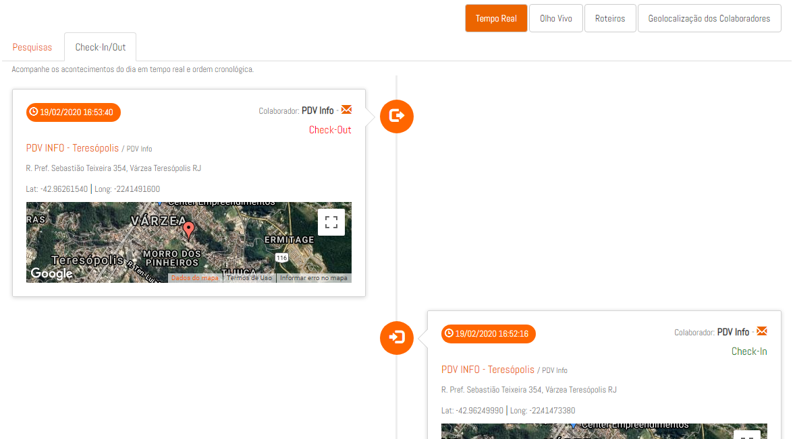
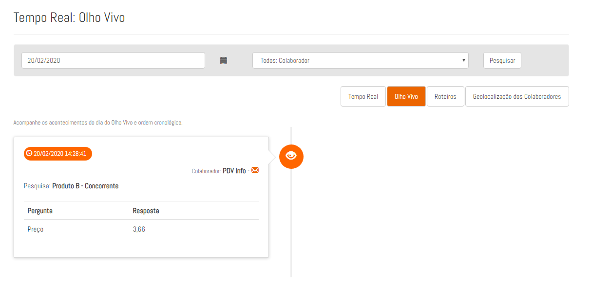
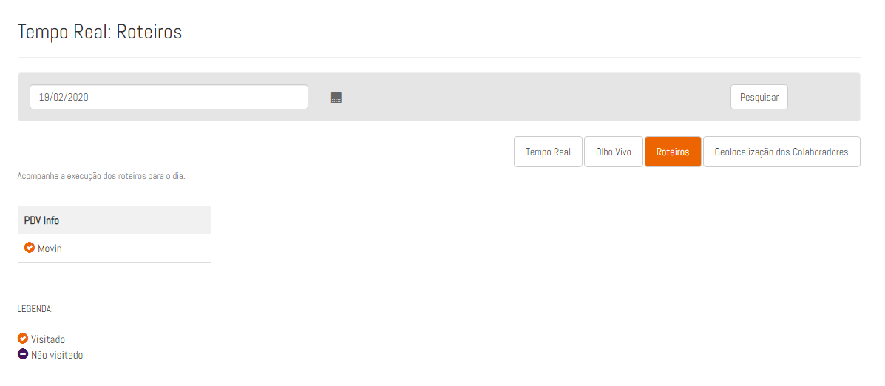
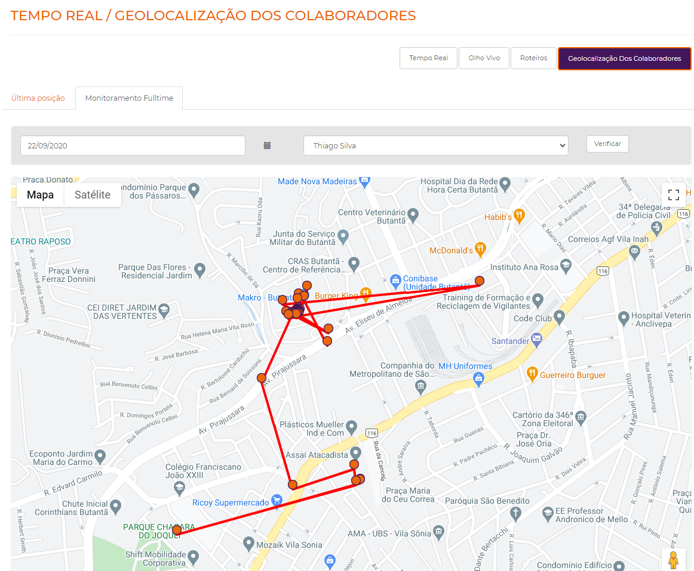

Tempo Real
1. O que é:
O Tempo Real é a página que consolida os dados vindo dos colaboradores em campo. Esses dados são apresentados em tempo real assim que são enviados do app do promotor.

No tempo real você pode filtrar os dados por um período selecionando data inicial e data final, pode filtrar pelos PDVs, digitando o nome do PDV ou podendo selecionar o grupo dos PDVs, o estado, a rede, o canal ou digitando o nome da cidade do PDV, também é possível filtrar as informações por pesquisa e por último, pode-se filtrar por colaborador, selecionando o grupo dos colaboradores ou digitando o nome do colaborador.
2. Check-in/Out
Em Check-in/Out estão dispostas as informações sobre as entradas nos PDV's pelos colaboradores. Junto com um mapa mostrando a localização do mesmo no momento em que realizou a ação.

3. Olho Vivo
Em Olho Vivo, todos os produtos cadastrados que serão monitorados pelos colaboradores aparecem aqui, incluindo as respostas dadas.

4. Roteiro
Em roteiro, você terá uma visão dos roteiros naquele dia dos promotores, com os pontos que foram visitados e que ainda não foram. 
5. Geolocalização dos Colaboradores
Se a opção de rastreamento Full-time do colaborador estiver ligada, as informações do possionamento em tempo real dele apareceram geolocalização do colaborador onde você terá duas opções, a última posição dos colaboradores, nela irá mostrar a última posição de todos os colaboradores no dia selecionado.

Na opção monitoramento Full-time, você poderá visualizar o percurso realizado pelo colaborador no dia selecionado, nesta opção vai aparecer somente o percurso do colaborador selecionado, por padrão o primeiro que vai aparecer é o primeiro colaborador em ordem alfabética.
